<title>Leave War colours round</title>
<meta name="claude:viewport-fit-sides" content="cover">
<style>
/* Layout: one reading column; at the top the short list of what to look at now (D1237), then one section per item,
   each a pair of pictures — today beside the recommendation — that a tap opens full size. */
:root {
  --bg: #f4f6f8; --panel: #ffffff; --ink: #14181d; --ink-2: #4b5560; --edge: #d9dee4;
  --accent: #0f7f99; --rec: #0d6b3b; --rec-bg: #e5f4ea; --q: #8a5a00;
  --f-body: "Inter", system-ui, -apple-system, "Segoe UI", sans-serif;
  --f-head: "Archivo", "Inter", system-ui, sans-serif;
}
@media (prefers-color-scheme: dark) { :root:not([data-theme="light"]) {
  --bg: #0e1216; --panel: #161c22; --ink: #e8edf2; --ink-2: #9aa6b2; --edge: #2a333c;
  --accent: #3bc6e8; --rec: #7fdc9f; --rec-bg: #12281b; --q: #f0b54a; color-scheme: dark } }
:root[data-theme="dark"] {
  --bg: #0e1216; --panel: #161c22; --ink: #e8edf2; --ink-2: #9aa6b2; --edge: #2a333c;
  --accent: #3bc6e8; --rec: #7fdc9f; --rec-bg: #12281b; --q: #f0b54a; color-scheme: dark }
body { background: var(--bg); color: var(--ink); font: 15px/1.5 var(--f-body);
  padding-left: max(16px, env(safe-area-inset-left, 0px)); padding-right: max(16px, env(safe-area-inset-right, 0px)); padding-block: 20px 48px; }
main { max-width: 880px; margin: 0 auto; display: flex; flex-direction: column; gap: 28px; }
h1 { font: 800 22px/1.2 var(--f-head); margin: 0; text-wrap: balance; }
h2 { font: 800 17px/1.25 var(--f-head); margin: 0; text-wrap: balance; }
p { margin: 0; max-width: 68ch; }
.sub { color: var(--ink-2); }
.now { background: var(--panel); border: 1px solid var(--edge); border-radius: 12px; padding: 14px 16px; display: flex; flex-direction: column; gap: 10px; }
.now h2 { font-size: 13px; letter-spacing: .08em; text-transform: uppercase; color: var(--ink-2); }
.now ol { margin: 0; padding-left: 20px; display: flex; flex-direction: column; gap: 8px; }
.now li { padding-left: 2px; }
.rec { color: var(--rec); font-weight: 700; }
a { color: var(--accent); }
section { display: flex; flex-direction: column; gap: 12px; }
.tag { font-size: 12px; font-weight: 700; letter-spacing: .06em; text-transform: uppercase; color: var(--q); }
.recbox { background: var(--rec-bg); border-radius: 10px; padding: 10px 12px; }
.pair { display: grid; grid-template-columns: repeat(auto-fit, minmax(260px, 1fr)); gap: 12px; }
.pair.wide { grid-template-columns: 1fr; }
figure { margin: 0; min-width: 0; display: flex; flex-direction: column; gap: 6px; }
figure a { display: block; border: 1px solid var(--edge); border-radius: 8px; overflow: hidden; background: #000; }
figure img { display: block; width: 100%; height: auto; }
figcaption { font-size: 13px; color: var(--ink-2); }
figcaption b { color: var(--ink); }
.reply { font: 600 14px/1.4 ui-monospace, "SF Mono", Menlo, monospace; background: var(--panel); border: 1px dashed var(--edge); border-radius: 8px; padding: 10px 12px; }
hr { border: 0; border-top: 1px solid var(--edge); margin: 4px 0; width: 100%; }
</style>
<main>
  <header style="display:flex;flex-direction:column;gap:6px">
    <h1>The four fixes, and round 1: the colours</h1>
    <p class="sub">Saturday 24 Oct 26 · pull request 569. Tap any picture to see it full size.</p>
  </header>

  <div class="now">
    <h2>Look at now</h2>
    <ol>
      <li><b>The four fixes are built and checked</b> — try them on your iPhone: <a href="https://raptor-git-claude-lw-m3-placing-leave-kai-e2f5.vercel.app">the preview</a>. Pictures <a href="#fixes">below</a>.</li>
      <li><b>Q1</b> An OIL taken (time off spent) turns the other leave's blue; FO and HO (OIL given) stay green. <span class="rec">Recommend: yes.</span> <a href="#q1">Pictures</a></li>
      <li><b>Q2</b> A course turns a warmer violet; an overseas duty turns a warm stone colour, filled, instead of grey. <span class="rec">Recommend: yes.</span> <a href="#q2">Pictures</a></li>
      <li><b>Q3</b> The Inputs calendar's bars wear the same colour per kind as the Leave War; duties and other commitments a slate of their own. <span class="rec">Recommend: yes, slate.</span> <a href="#q3">Pictures</a></li>
      <li><b>Q4</b> The star on an OIL the app credited: keep it as a letter, "HO*". <span class="rec">Recommend: keep "HO*".</span> <a href="#q4">Pictures</a></li>
    </ol>
    <p class="reply">To answer, reply with e.g. “Q1 yes, Q2 yes, Q3 yes, Q4 keep”.</p>
  </div>

  <section id="fixes">
    <span class="tag">Built · checked</span>
    <h2>The four fixes from your iPhone look</h2>
    <p><b>1. The bid window on a day that already holds the bid</b> now shows the day as it stands, your bid counted. Your case: Saber's LL on Wed 2 Dec, Required P 28 — the window reads "Available P 27 · red", never "No manning row turns amber or red". It works for a pending bid and for an approved one (the check found the approved one showed no line at all; fixed too).</p>
    <div class="pair">
      <figure><a href="s6b-pending-phone.png">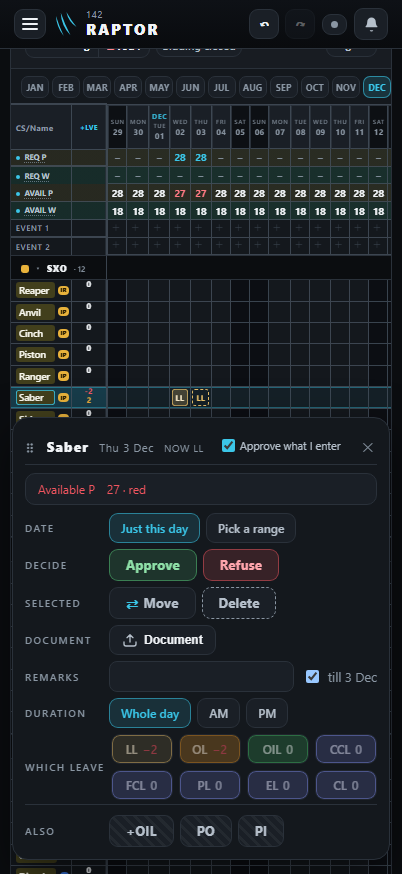</a><figcaption><b>A pending bid</b> (Approve what I enter off), reopened.</figcaption></figure>
      <figure><a href="s2-held-phone.png">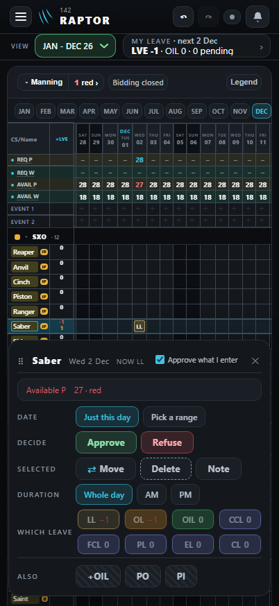</a><figcaption><b>An approved leave</b>, reopened.</figcaption></figure>
    </div>
    <p><b>2. A quick sideways swipe across the "Open for bidding" months</b> picks every month it passes, as a slow drag does. A move up or down still scrolls; a tap still opens or closes one month; one Undo takes the swipe back.</p>
    <div class="pair">
      <figure><a href="s8-swipe.png">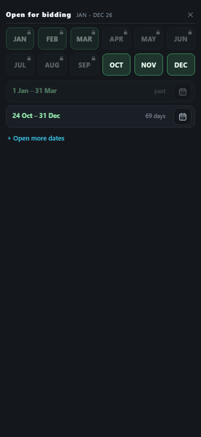</a><figcaption><b>One quick swipe OCT → DEC</b>: one stretch, 24 Oct – 31 Dec, 69 days.</figcaption></figure>
    </div>
    <p><b>3. The Inputs list on a phone uses the full width</b> — its cards line up with the buttons above them. Checking it, six windows (an opened day, an input's own window, the SANS day and three more) stood 8px short of the right edge on a phone; they now sit in the middle.</p>
    <div class="pair">
      <figure><a href="inp-list-before.png">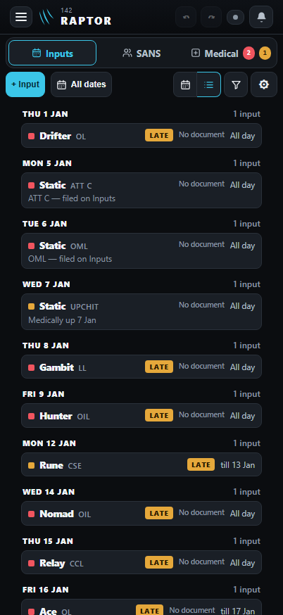</a><figcaption><b>Before</b>: the cards 30px in from each edge.</figcaption></figure>
      <figure><a href="inp-list-after.png">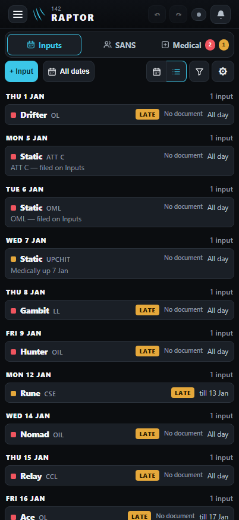</a><figcaption><b>After</b>: 8px, the buttons' own edge.</figcaption></figure>
      <figure><a href="inp-daypanel-before.png">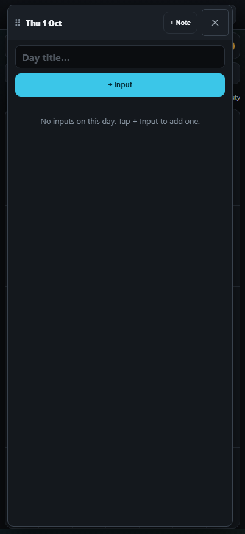</a><figcaption><b>Before</b>: an opened day, 12px left, 20px right.</figcaption></figure>
      <figure><a href="inp-daypanel-after.png">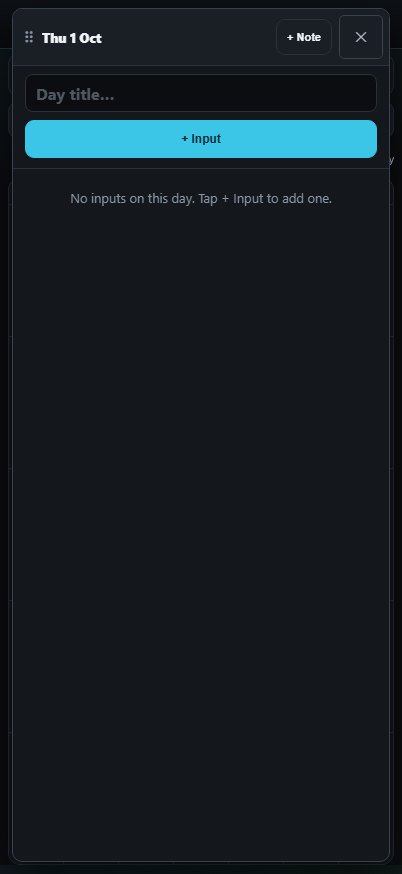</a><figcaption><b>After</b>: 12px each side.</figcaption></figure>
    </div>
    <p><b>4. "+ Medical" on a desktop</b> stands at the right, and its window opens at the right with every card clear of it; the card you file wears the cyan ring for six seconds, with no "Input added" note over it. On a phone it stays first, as before. One small thing to know: while the window is open, a thin sliver of the "+ Medical" button shows beside it — every window sits 16px from the edge, the page's buttons 12px. I left it.</p>
    <div class="pair wide">
      <figure><a href="m2-pc125.png">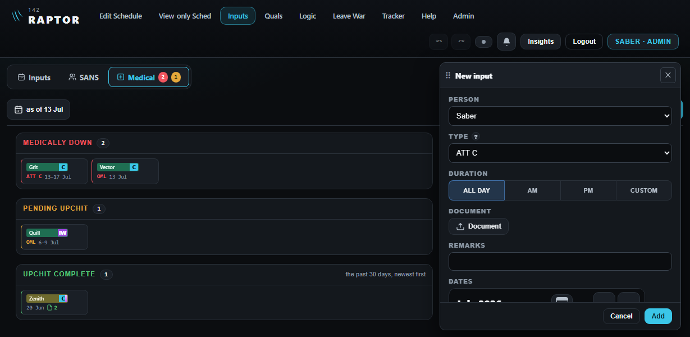</a><figcaption><b>At your PC's size</b>: the window at the right, the cards beside it.</figcaption></figure>
      <figure><a href="m4-saved-pc125.png">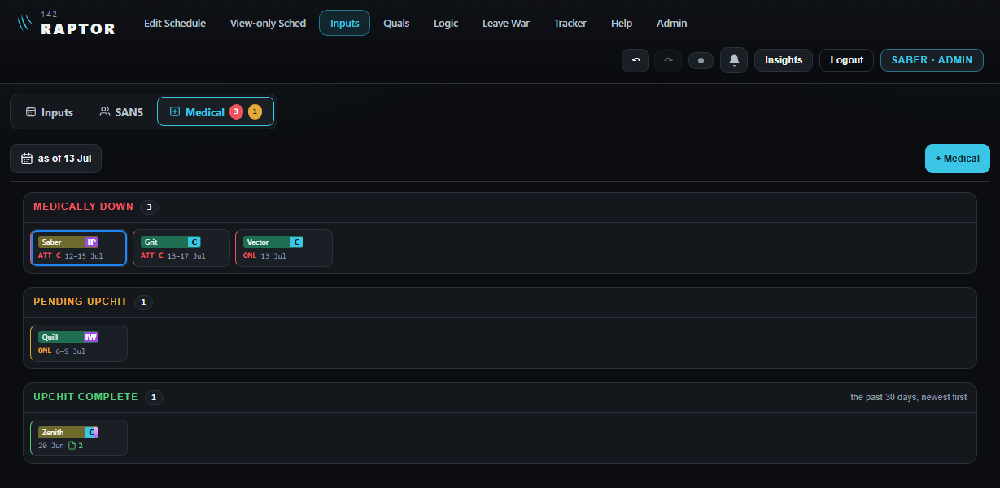</a><figcaption><b>Just filed</b>: Saber's ATT C 12–15 Jul, ringed.</figcaption></figure>
    </div>
  </section>

  <hr>

  <section id="q1">
    <span class="tag">Round 1 · Q1</span>
    <h2>OIL taken and OIL given: two colours</h2>
    <p>Today an OIL (time off he spends) and an FO or HO (OIL given to him) are both green, so a box that spends OIL reads like one that gives it. Green is the app's colour for OIL earned, so FO and HO keep it; an OIL taken is leave spent, like a CCL, so it takes the other leave's blue.</p>
    <p class="recbox"><span class="rec">Recommend: yes</span> — OIL taken blue, FO / HO green. The bid window's OIL button and the Legend follow.</p>
    <div class="pair">
      <figure><a href="q1-grid-today.png">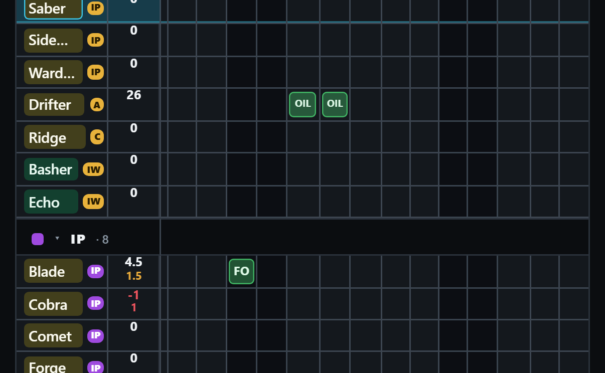</a><figcaption><b>Today</b>: Drifter's OIL and Blade's FO, both green.</figcaption></figure>
      <figure><a href="q1-grid-proposed.png">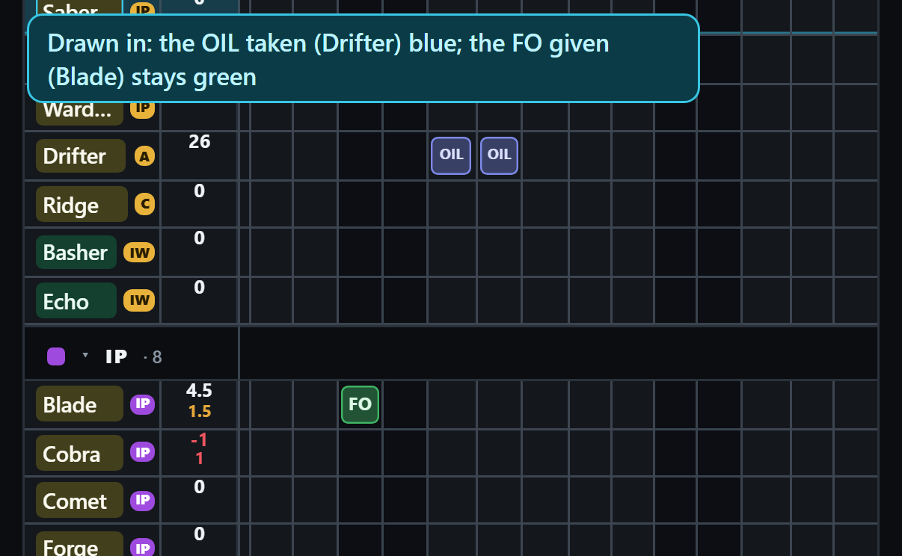</a><figcaption><b>Recommended</b>: the OIL taken blue, the FO green.</figcaption></figure>
    </div>
  </section>

  <section id="q2">
    <span class="tag">Round 1 · Q2</span>
    <h2>Course and overseas duty</h2>
    <p>Two small shifts so no two kinds look alike. The course's lilac sits close to the other leave's blue; it moves warmer, to violet. The overseas duty's grey is the same grey a refused box wears; it becomes a warm stone colour, filled. The other leave keeps its blue, which stays clear of the cyan edge a leave filed on the Inputs page wears.</p>
    <p class="recbox"><span class="rec">Recommend: yes</span> — course violet, overseas duty warm stone.</p>
    <div class="pair">
      <figure><a href="q12-legend-today.png">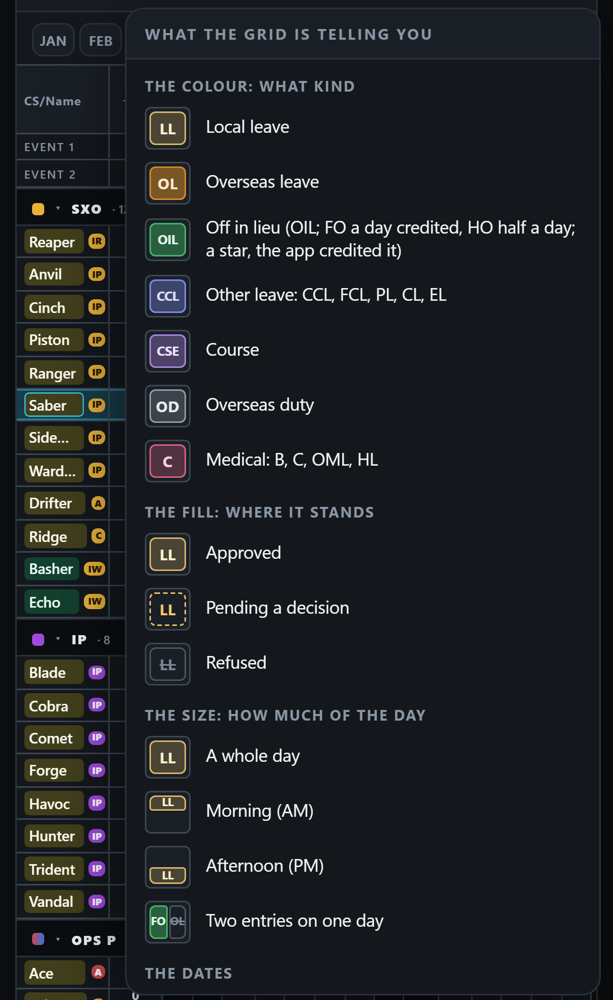</a><figcaption><b>Today</b>: the Legend on your iPhone.</figcaption></figure>
      <figure><a href="q12-legend-proposed.png">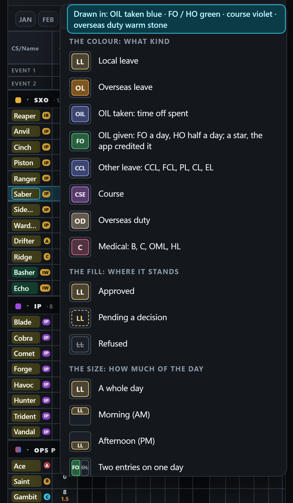</a><figcaption><b>Recommended</b>: Q1 and Q2 together — the OIL row split in two.</figcaption></figure>
    </div>
  </section>

  <section id="q3">
    <span class="tag">Round 1 · Q3</span>
    <h2>The Inputs calendar takes the same colours</h2>
    <p>You asked for this (D1304). Today every absence on the Inputs calendar is the app's error red and every duty its warning amber. With this, an LL, an OL, an OIL, a course, an overseas duty or a medical looks the same on both pages. Duties and other commitments need a colour of their own, since amber is leave's: a quiet slate, because they don't take anyone off the manning.</p>
    <p class="recbox"><span class="rec">Recommend: yes</span>, with duties and commitments in slate.</p>
    <div class="pair wide">
      <figure><a href="q3-inputs-today.png">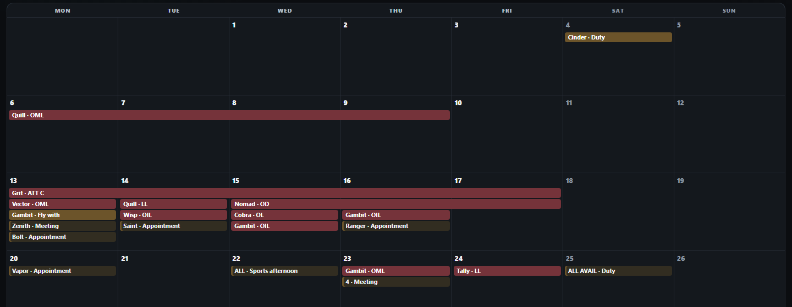</a><figcaption><b>Today</b>: July, red and amber only.</figcaption></figure>
      <figure><a href="q3-inputs-proposed.png">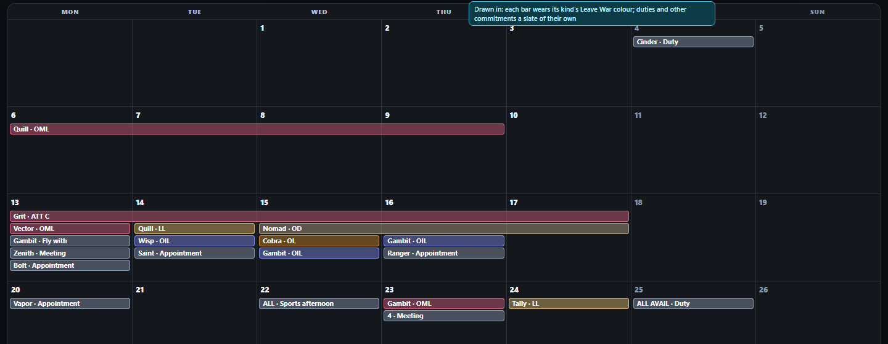</a><figcaption><b>Recommended</b>: each kind its Leave War colour (with Q1 and Q2), duties slate.</figcaption></figure>
    </div>
  </section>

  <section id="q4">
    <span class="tag">Round 1 · Q4</span>
    <h2>The star on an OIL the app credited</h2>
    <p>The star says the published schedule earned it, not an admin. Measured in a half-day box, "HO*" fits — with an iPhone's wider letters too. The other way I drew, a dot in the box's corner, crowds the O and is hard to see.</p>
    <p class="recbox"><span class="rec">Recommend: keep "HO*"</span> as it is.</p>
    <div class="pair">
      <figure><a href="q4-star.png">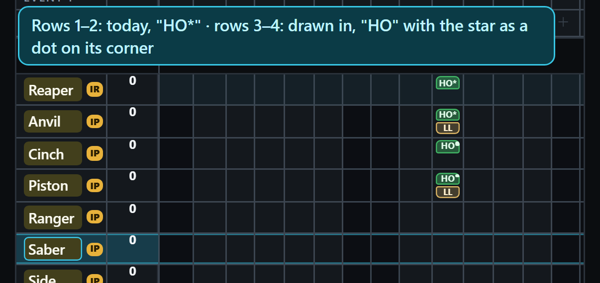</a><figcaption><b>Rows 1–2</b> today, "HO*"; <b>rows 3–4</b> the dot.</figcaption></figure>
      <figure><a href="q4-star-wide.png">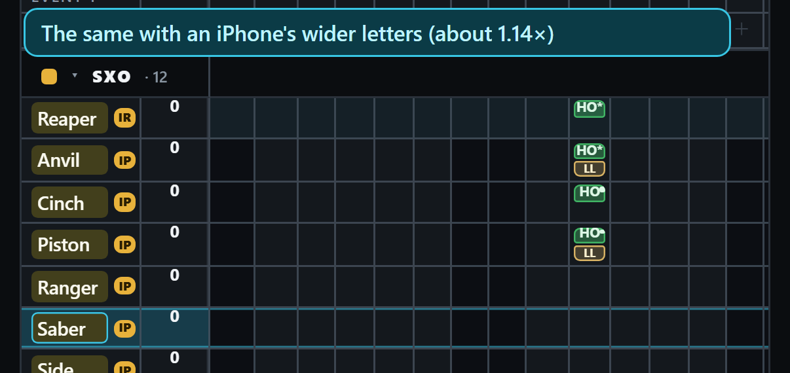</a><figcaption><b>With wider letters</b>: "HO*" still fits.</figcaption></figure>
    </div>
  </section>

  <section id="ideas">
    <span class="tag">Ideas only</span>
    <h2>Your colleague's colours</h2>
    <p>As you said, ideas, not something to follow. What they confirm: one clear colour for each kind, which the Leave War already has. What I would not take: their course, overseas duty and other kinds are all grey, the same problem Q2 fixes.</p>
    <div class="pair">
      <figure><a href="colleague-colours.png">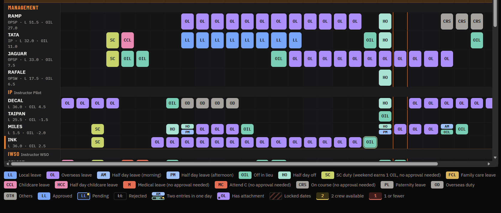</a><figcaption>Your colleague's app.</figcaption></figure>
    </div>
  </section>
</main>
